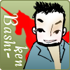
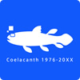

石橋 健太（イシバシ ケンタ）
AUGMENT8の発起人。マグマワークス代表。
A型、しし座、サウスポーのムーブメントプランナー。マグマワークスでイベントの裏方稼業やってます。ARG(代替現実ゲーム)、謎解きイベント、お化け屋敷、その他オルタナイベントなど。変わり種で世の中を盛り上げたい！
藤田 健一（フジタ ケンイチ）
トライポット代表
iPhone・ipadアプリ、Flash、デジタルサイネージ で今年は頑張る！
笑顔が生まれるデジタルサイネージ「Joy-ad（ジョイアド）」販売中！
赤木 崇（アカギ タカシ）
元まよシステムズ代表。2013年後半より絶賛サラリーマン。
Flex、AIRが絶滅危惧種となり、いろいろ迷いながらのエンジニア。
赤の女王仮説に基づいて走り続ける日々、
たまにつまずくのもまた一興。
渡辺 桂三（ワタナベ ケイソウ）
フリーランスのプログラマとして様々なウェブページの制作に関わり、
時には学校の非常勤講師としてウェブデザイナーの育成に携わる。
好物は、甘い物とシンセサイザー、3DCG、GPS、電子工作。
火村 智彦（ヒムラ トモヒコ）
Emacsがあれば戦えるそんなローテクプログラマ。
Hiroshima.rbを結成。広島Ruby勉強会などを主催している。
- http://eiel.info/
- 技術メモBLOG: そんなこと覚えてない
- 日常BLOG: 日常と勉強会と広島と。
- @eielh
- github: eiel
長嶋 亜紀（ナガシマ アキ）
普段は会社員。Webデザイナ。
趣味はドラムと健全なコーディング。
jimdoEvangelist・CSS Nite in HIROSHIMA実行委員会・広探ゲームスタッフとしても活動。
リベロ。
- BLOG: giraffe.LA
- @akigonn
川上 博子（カワカミ ヒロコ）
川谷制作所属、主にデザイン担当。印刷会社歴の方が長いのでDTPも一応守備範囲。
趣味は二度寝と散歩と乱読。
穴吹デザイン専門学校にて非常勤講師。
JAGDA会員。
佐藤 慎也（サトウ シンヤ）
SUGARSPOTという名前でAndroidアプリの開発やWEB関係・業務システムの開発などを行っています
Androidに関する事ならお任せください！
谷花 真理（タニハナ マリ）
FLAP design代表。
主な仕事はWebデザインとコーディング。CMSはMTが得意。
ちっさなものからおっきなものまで作ってます。
広島開業支援プロジェクト開援隊メンバー。広島ADC会員。

西村 誠（ニシムラ マコト）
Windows Phone、Windowsストアアプリ開発者。
EC-CUBE公式エバンジェリスト。
PHPを用いたWebサイト構築、ActionScriptを用いたFlash開発も可能。
（2014年3月現在）